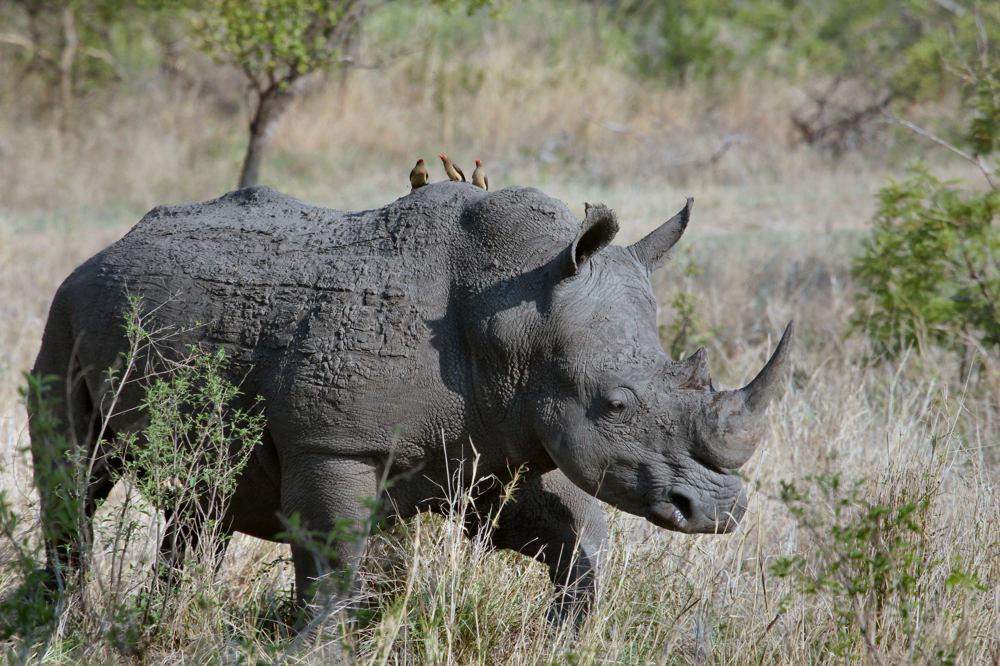

Os Rinocerontes são grandes mamíferos perissodáctilos (ungulados de dedos ímpares) da família Rhinocerontidae,
que ocorrem na África e na Ásia.Atualmente, existem cinco espécies distribuídas em quatro gêneros.
Duas ocorrem na África, o rinoceronte-branco (Ceratotherium simum) e o rinoceronte-negro (Diceros bicornis);
e três ocorrem na Ásia, o rinoceronte-de-sumatra (Dicerorhinus sumatrensis),
o rinoceronte-de-java (Rhinoceros sondaicus) e o rinoceronte-indiano (Rhinoceros unicornis).
Todas cinco espécies de rinocerontes são ameaçadas pela caça furtiva – três estão criticamente ameaçadas de extinção.
O mercado negro de chifres de rinoceronte, especialmente no Vietnã, onde os cornos são valorizados por supostas
propriedades medicinais e como símbolos de status, tem estimulado a morte de rinocerontes por anos.
Na África do Sul vivem quase 70% dos cerca de 29.500 rinocerontes restantes na Terra. Antes do século 19, quando a
tividade dos europeus no continente se intensificou, a população chegava a centenas de milhares de animais
As cinco espécies habitam dois continentes. Dos rinocerontes-brancos, restam cerca de 20400 indivíduos; já
o rinoceronte-negro, 5250. As outras espécies são o rinoceronte-indiano, o rinoceronte-de-sumatra e o rinoceronte-de-java.
 Aluno: Grégori Cabral
Univerisdade Univali